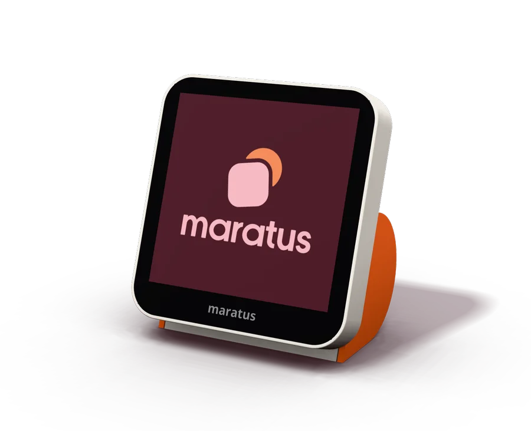
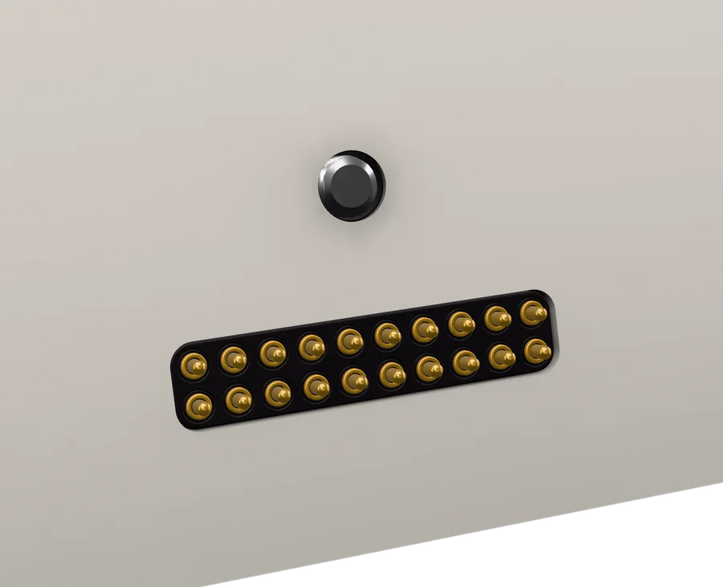
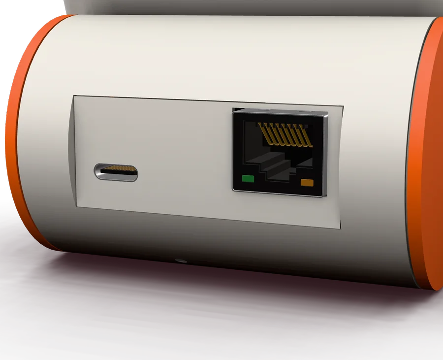

How it’s built and how it connects
For the people who will wire it up. This page describes the device as designed. The hardware is in development and the pictures are design renders.
Read the API docshi@maratus.co

Size
The Core on its Dock, resting on a counter.
- Width
- 86.6 mm
- Depth
- 61.4 mm
- Height
- 93.8 mm
The Core
The screen and the computer behind it. It works on the Dock, or on its own.
- Screen
- 4-inch touchscreen behind black glass. The name maratus is on the glass, under the screen.
- Processor
- ESP32-P4
- Power
- Always powered. On the Dock through the gold contacts, off the Dock through its own USB-C port.
- Underside
- USB-C port and slots for the sounder
- Back
- One flat plane with 20 round gold contacts, level with the case. Two 10 mm magnets sit half a millimetre under it, one each side of the contacts.
- Updates
- Firmware over the air, configuration from the panel
Underneath
The Core’s own USB-C port is on its underside. Off the Dock, this is where the power goes in.

The Dock
It holds the Core at an angle and keeps the cables on the staff side.
- Contact
- 20 spring pins (pogo pins), two rows of ten
- Hold
- Two magnets in the Core’s back, opposite the Dock’s own
- Lock
- A bolt through the Dock into a nut in the Core
- Power
- USB-C on the back of the Dock. It reaches the Core through the spring pins.
- Sockets
- USB-C (power only) and Ethernet (RJ45), on the back


Network and power
- Wi-Fi
- Dual-band Wi‑Fi 6. The installer joins the store’s Wi‑Fi on the device’s own screen.
- Ethernet
- Through the Dock
- USB-C
- On the underside of the Core and on the back of the Dock. On the Dock, use the Dock’s port: the Core stands too low for a plug underneath.

Mounting
- Dock
- On the counter, by the till
- Steel
- The two magnets in the Core’s back hold it to a steel surface. Power goes in underneath, over USB-C.
- Holder
- Store-style security holders. The USB-C port underneath stays free.


Triggering the screen
Your system sends one request with a device ID and a URL. The device shows the URL as a QR code, and the customer’s browser opens it. Maratus never hosts or fetches the page.
POST https://api.maratus.co/v1/devices/{deviceId}/trigger
Host: api.maratus.co
Idempotency-Key: {your-unique-key}
Content-Type: application/json
{
"action": "show_qr",
"payload": {
"url": "https://your-brand.example/receipt/123"
}
}- API key
- Needs the
devices:triggerscope.Idempotency-Keyis required. - Till labels
- If your system knows a till by its label:
POST https://api.maratus.co/v1/registers/{registerNumber}/trigger - Offline
- A request to a device that is offline or paused is rejected, so your integration can decide what happens next.
- Pinned content
- A menu, Wi-Fi link or campaign can stay on screen until you change it, for one device, one store or the whole organisation, from the panel.
- Counting
- The panel counts triggers a device has acknowledged. Maratus can’t tell whether a customer scanned. You can, on your own page.
- Where
- Docs at docs.maratus.co, the API at api.maratus.co
Two ways to integrate
Your team does it
Your developers add the request to the POS, CRM, loyalty or booking system. The work depends on that software.
We do it for you
On request. Bring the people who run your till software to the first conversation.
In the store
- The device arrives already registered to your organisation.
- The installer joins it to the store’s network on its own screen.
- Head office assigns it to the store from the panel.
- Your system sends the first link.
The device is included in the subscription. You don’t buy hardware.